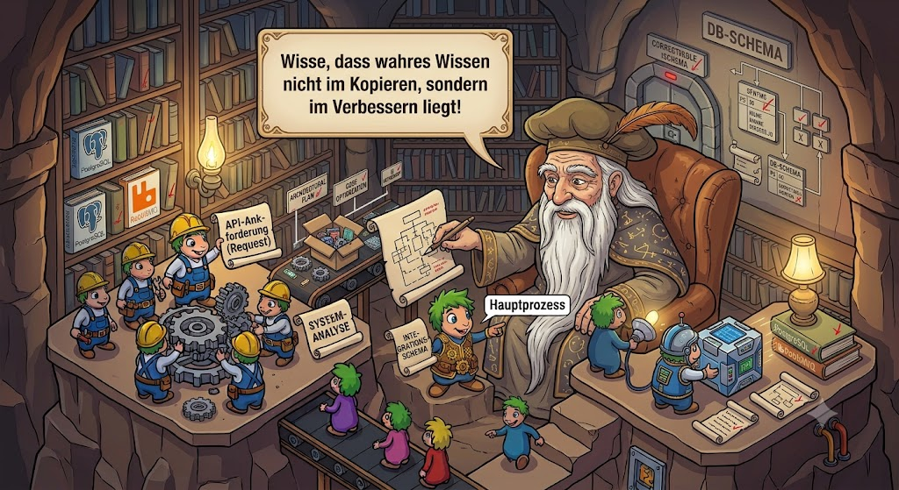

|
<< Click to Display Table of Contents >> Navigation: »No topics above this level« Besserwisserei |

Weil es ein Standard ist und es nahezu überall funktioniert. Eigentlich wären WebSockets besser oder aber eine vollkommen andere Aufrufinfrastruktur - aber das würde in vielen Fällen eine komplette Neuentwicklungen erfordern. Außerdem sind die UI-Bibliotheken auf eine REST-artige Struktur besser vorbereitet. Also auf der Client-Seite bleibt es bei HTTP mit REST-artigen Aufrufen.
Aber eigentlich ist die Weiterleitung per http an Gemstone/S die schlechteste Entscheidung, die man machen kann - aber auch hier gibt es halt Software, die das bereits in Gemstone/S gut kann. Also nutzt man diese.
Nun mit dem RabbitMQ Connector ist eigentlich die Komponente gekommen, die das besser machen könnte: der Client kommt mit einem HTTP-Request rein, wird von Apache empfangen und dann wird der Request an einen zu schreibenden Proxy geschickt (am besten in einer sehr schnellen Sprache), der die Daten als RabbitMQ Telegramm verpackt und an RMQ sendet (z.B: an amq.topic) und sie mit zwei Attributen ausstattet: der Speicherkategorie und dem API-Namen
Die Gemstone/S Prozesse bekommen die Events zugeschickt, die sie abarbeiten können und arbeitet sie ab. Antworten via RabbitMQ und der Proxy sendet die Antwort über den Apache zurück.
Gemstone/S ist eine Serveranwendung. Serveranwendungen sollten sich freundlich zu der Hardware verhalten - der maximal zu nutzende Speicherbedarf sollte definierbar sein (das sollten auch Java Entwickler berücksichtigen - es gibt kein "da kann sich die VM einfach mehr Speicher holen" auf einem Server).
Bei PAS war es von Anfang an wichtig, daß der Entwickler die API Calls in Speicherkategorien einteilt: "normal", "long", "memory" und "externaldb". Letzteres kam mit der PostgreSQL Anbindung (eigentlich keine Speicherkategorien). Auch wenn man manchmal falsch liegt mit der Kategorisierung eines Calls während der Entwicklung - in der Regel hat man das richtige Gefühl für die Komplexität des Codes (programmierte Aufrufe in Gemstone, Suchen, Schleifen bei der Implementierung des Calls).
Das bedeutet, daß die Calls immer nur von den dafür vorgesehenen Gemstone/S Prozesse ausgeführt wurden. Das führt nun leider dazu, daß einige Prozesse sehr wenig tun. Also kann man in die Versuchung geraten, alle Prozesse so zu starten, daß sie "memory" ausführen können - also Prozesse mit dem größten Memory-Footprint - aber Memory ist auch häufig "long". Man kann schnell sehen, dass der Dispatcher von Apache überhaupt nicht ausreicht.
Leider hatte ich nie Zeit, dieses zu implementieren und so die praktische Nutzbarkeit zu überprüfen.
Noch so ein Problem - JSON ist langsam, langsam und noch einmal: langsam. Aber es ist Mainstream, es ist schick, cool und es ist lesbar und es wird überall durch Tools und Programmiersprachen unterstützt ... aber überall gleichzeitig gegen den Mainstream zu schwimmen kostet zuviel Zeit. Also bleiben wir bei JSON.